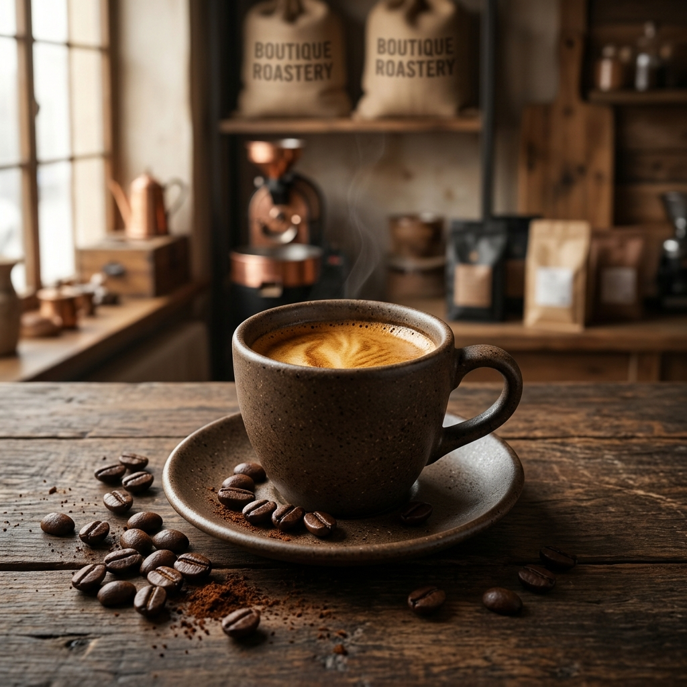
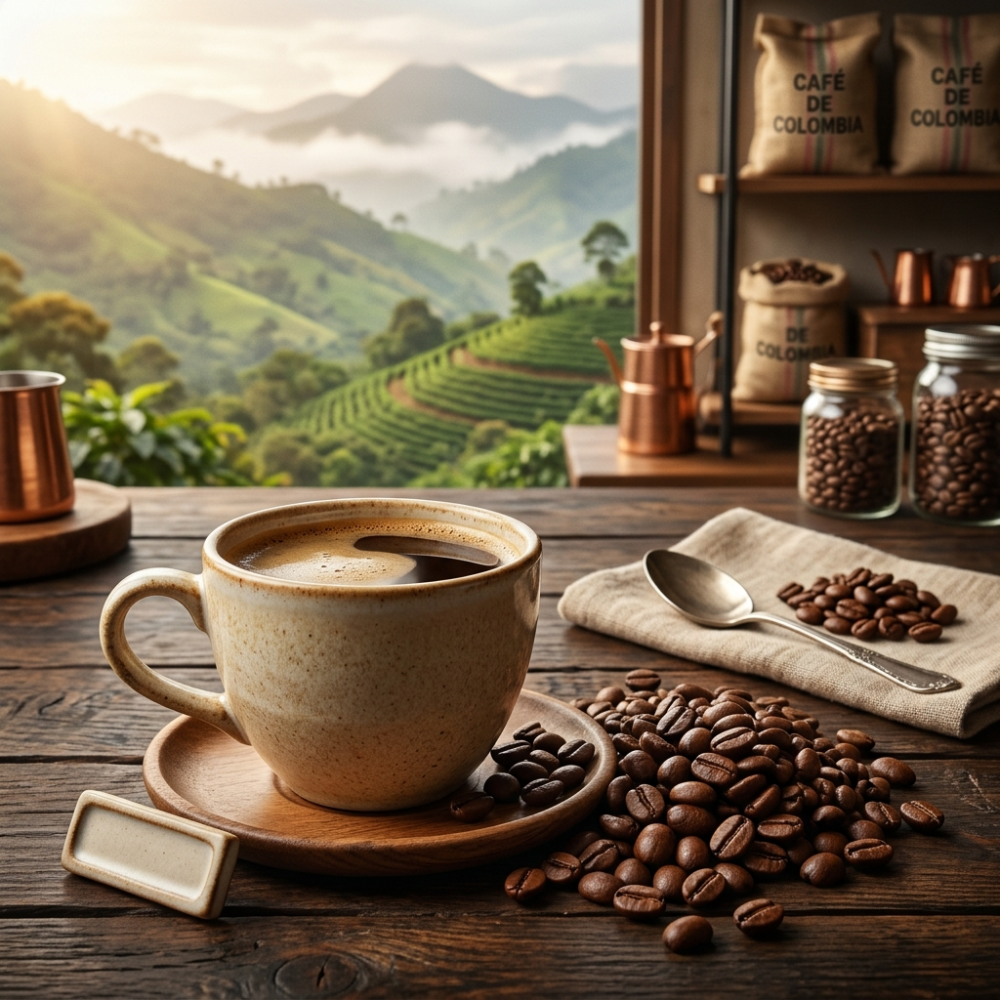
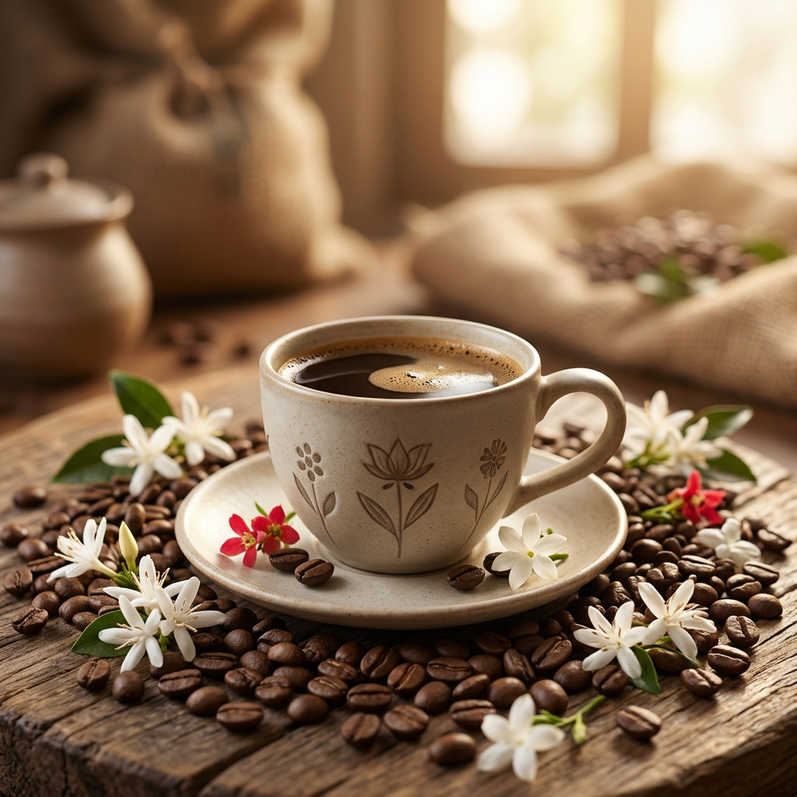

אספרסו הבית
תערובת קפה מובחרת עם גוף מלא, קרמה עשירה וטעמי שוקולד ואגוזים.
Roasted with care. Baked with love.
ברוכים הבאים לבית הקלייה של ROASTÉ & BUTTER, המקום שבו כל פולי קפה מקבלים את תשומת הלב הראויה להם.
אנחנו מאמינים שקפה מצוין מתחיל בבחירה נכונה של פולים, ממשיך בתהליך קלייה מדויק ומסתיים בכוס קפה עשירה בארומה ובטעם.
אנחנו עובדים עם פולי קפה איכותיים מאזורים שונים בעולם, כאשר לכל זן מאפיינים ייחודיים של טעם, גוף וארומה. אנחנו בוחרים כל פולי קפה בקפידה כדי להבטיח חוויית קפה עשירה ומיוחדת.
תהליך הקלייה הוא שילוב של מקצועיות, ניסיון ותשומת לב לפרטים. אנחנו מתאימים את דרגת הקלייה לאופי הפולים, כדי להוציא מהם את הטעמים והארומות הטובים ביותר.
בין אם אתם אוהבים אספרסו חזק, קפוצ'ינו קטיפתי או קפה פילטר עדין, אצלנו תמצאו מגוון טעמים וסגנונות שיתאימו בדיוק להעדפות שלכם.

תערובת קפה מובחרת עם גוף מלא, קרמה עשירה וטעמי שוקולד ואגוזים.

קפה איכותי בעל חמיצות מאוזנת, ניחוחות פירותיים ומתיקות עדינה.

קפה בעל ניחוחות פרחוניים, ארומה הדרית וטעמים עדינים ומורכבים.